Snapshot Capture
概要
Snapshot Capture は、Maya のビューポートから画像をキャプチャするためのツールです。以下の3つのモードを搭載しています。
| モード | 説明 |
|---|---|
| PNG | 現在のフレームを PNG 画像として保存またはクリップボードにコピー |
| GIF | タイムラインの範囲をアニメーション GIF または MP4 として保存 |
| Rec | ビューポートをリアルタイムで録画し、GIF または MP4 として保存 |
また、キャプチャした画像に矢印や図形などのアノテーションを追加できるアノテーションエディター機能も搭載しています。
起動方法
専用のメニューか、以下のコマンドでツールを起動します。
import faketools.tools.common.snapshot_capture.ui
faketools.tools.common.snapshot_capture.ui.show_ui()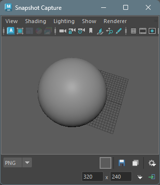
基本的な使い方
ビューポートの操作
ツールウィンドウには専用のモデルパネル（ビューポート）が埋め込まれています。通常の Maya ビューポートと同様に、カメラの回転・パン・ズームなどの操作が可能です。
カメラの切り替え
メニューバーの Camera メニューから、表示するカメラを切り替えることができます。
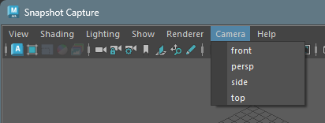
Isolate Select
メニューバーの Isolate メニューから、選択したオブジェクトのみをビューポートに表示することができます。
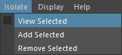
| メニュー項目 | 説明 |
|---|---|
| View Selected | 選択オブジェクトのみ表示 / 全オブジェクト表示を切り替え |
| Add Selected | 現在選択中のオブジェクトを Isolate 表示に追加 |
| Remove Selected | 現在選択中のオブジェクトを Isolate 表示から除外 |
Note: 埋め込みビューポートでは Maya 標準の Show > Isolate Select メニューが動作しないため、このカスタムメニューで同等の機能を提供しています。
表示要素の制御
メニューバーの Display メニューから、ビューポートに表示する要素を制御できます。
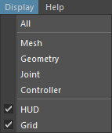
| メニュー項目 | 説明 |
|---|---|
| All | すべての表示要素を有効にする |
| Mesh | ポリゴンメッシュのみ表示 |
| Geometry | ジオメトリ（NURBS サーフェス、ポリゴン、サブディビジョン）のみ表示 |
| Joint | ジョイントのみ表示 |
| Controller | コントローラーと NURBS カーブのみ表示 |
| HUD | HUD（ヘッドアップディスプレイ）の表示/非表示を切り替え |
| Grid | グリッドの表示/非表示を切り替え |
Note: Mesh、Geometry、Joint、Controller を選択すると、他のすべての表示要素が非表示になり、選択した要素のみが表示されます。HUD と Grid はチェックボックス式のトグルで、他の表示設定に影響を与えずに切り替えできます。
解像度の設定
ツールバー下段で、出力画像の解像度を設定できます。
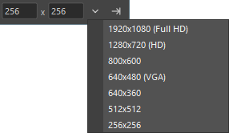
- 幅・高さ入力欄: 任意の解像度を直接入力
- プリセットボタン (▼):
以下のプリセットから選択可能
- 1920x1080 (Full HD)
- 1280x720 (HD)
- 800x600
- 640x480 (VGA)
- 640x360
- 512x512
- 320x240
- 256x256
- 128x128
- Set ボタン (→|): 入力した解像度をビューポートに適用
PNG モード
現在のフレームを PNG 画像としてキャプチャします。
操作方法
- モードセレクタで PNG を選択
- 必要に応じて背景色を設定（後述）
- 以下のいずれかを実行：
- Save ボタン : ファイルダイアログが開き、PNG ファイルとして保存
- Copy ボタン : クリップボードに画像をコピー
外部アプリで編集
Copy ボタンを右クリックすると、コンテキストメニューが表示されます。
- Edit in External App: キャプチャした画像を OS のデフォルト画像アプリで開きます
この機能を使用すると、キャプチャした画像を一時ファイルとして保存し、即座に外部アプリケーション（Windows のフォトアプリ、ペイントなど）で開くことができます。画像の簡単な編集や確認に便利です。
Note: この機能は現在 Windows のみで利用可能です。
背景色の設定
BG ボタンをクリックすると、カラーピッカーが開き背景色を選択できます。
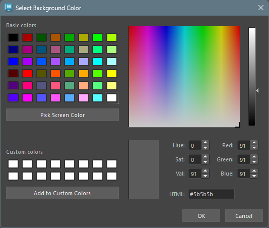
オプションメニュー
オプションボタンから以下の設定が可能です。
| オプション | 説明 |
|---|---|
| Transparent | 背景を透明にする（GIF のみ） |
| Use Maya Background | Maya のグローバル背景色を背景色に設定 |
| Edit Annotations | キャプチャ後にアノテーションエディターを起動 |
GIF モード
タイムラインの再生範囲をアニメーション GIF または MP4 としてキャプチャします。
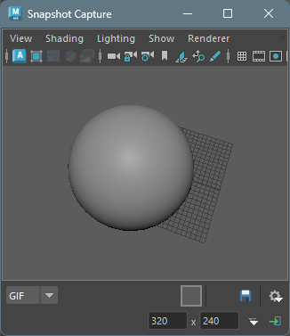
操作方法
- モードセレクタで GIF を選択
- Maya のタイムラインで開始フレームと終了フレームを設定
- 必要に応じて背景色・オプションを設定
- Save ボタン をクリックしてファイルを保存
オプション
オプションメニューから以下の設定が可能です。
| オプション | 説明 |
|---|---|
| Transparent | 背景を透明にする（GIF のみ） |
| Use Maya Background | Maya のグローバル背景色を使用 |
| Loop | GIF をループ再生する（デフォルト: オン） |
| FPS | フレームレートを設定（10, 12, 15, 24, 30, 50, 60） |
| MP4 Quality | MP4 の品質設定（High / Medium / Low） |
MP4 として保存
FFmpeg
がインストールされている場合、ファイルダイアログで
.mp4 形式を選択して保存できます。
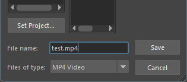
MP4 品質設定
オプションメニューの Quality サブメニューから MP4 の品質を選択できます。
| 品質 | 説明 |
|---|---|
| High | 高画質（CRF 18、エンコード速度: 遅い） |
| Medium | 標準画質（CRF 23、エンコード速度: 普通）（デフォルト） |
| Low | 低画質（CRF 28、エンコード速度: 速い） |
Note: MP4 保存には FFmpeg が必要です。FFmpeg は PATH に追加するか、一般的なインストール場所（
C:\ffmpeg\binなど）に配置してください。
Rec モード
ビューポートをリアルタイムで録画し、GIF または MP4 として保存します。マウスカーソルやキーボード入力のオーバーレイ表示も可能です。
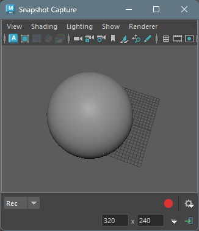
操作方法
- モードセレクタで Rec を選択
- オプションメニューで録画設定を行う（後述）
- Record ボタン をクリックして録画を開始
- カウントダウン後、録画が開始されます
- Stop ボタン をクリックして録画を停止
- ファイルダイアログが開き、GIF または MP4 として保存
カウントダウン中のキャンセル
カウントダウン中にボタンをクリックすると、録画をキャンセルできます。
オプション
オプションメニューから以下の設定が可能です。
| オプション | 説明 |
|---|---|
| Loop | GIF をループ再生する |
| FPS | 録画のフレームレート（10, 12, 15, 24, 30, 50, 60） |
| Quality | MP4 の品質（High / Medium / Low） |
| Delay | 録画開始前のカウントダウン秒数（0, 1, 2, 3） |
| Trim | 録画終了時に末尾からトリムする秒数（0, 1, 2, 3） |
| Show Cursor | マウスカーソルをオーバーレイ表示 |
| Show Clicks | クリック位置をインジケータで表示 |
| Show Keys | 押されたキーをオーバーレイ表示 |
マウスクリックについては、左クリック・右クリック・中クリックそれぞれ異なるインジケータが表示されます。
アノテーションエディター
PNG モードでは、キャプチャした画像に矢印や図形などのアノテーション（注釈）を追加できます。
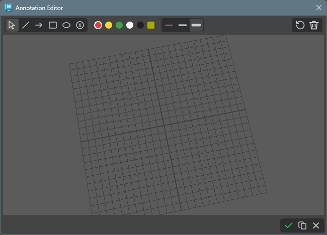
アノテーションエディターの起動
PNG モードで画像をキャプチャした後、オプションの Edit Annotations を有効にしたのち、に Save ボタン をクリックすると、アノテーションエディターが起動します。
ツールバー
アノテーションエディターのツールバーには以下の機能があります。
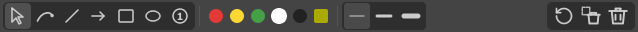
描画ツール
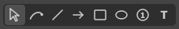
各アイコンをクリックしてポップアップするメニューから描画ツールを選択します。
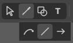
| ツール | アイコン | 説明 |
|---|---|---|
| 選択 | 描画したアノテーションを選択・ドラッグで移動・Ctrl+中ホイールでスケール | |
| フリーハンド | フリーハンドで線を描画 | |
| 線 | 直線を描画 | |
| 矢印 | 矢印を描画 | |
| 矩形 | 四角形を描画 | |
| 楕円 | 円・楕円を描画 | |
| 番号 | 番号付きの丸を描画（自動でインクリメント） | |
| テキスト | テキストを追加 |
選択ツール
選択ツールがアクティブな状態でアノテーションをクリックすると、そのアノテーションが選択されます。
選択中のアノテーションに対しては、以下の操作が可能です。
- 移動: ドラッグで位置を移動
- スケール: Ctrl キーを押しながら中ホイールを回転させて拡大・縮小
- 複数選択: ドラッグで複数選択
- 削除: Delete / Backspace キーで削除
選択状態
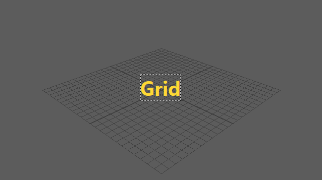
テキストツール
テキストツールがアクティブな状態で画像をクリックすると、テキスト入力ダイアログが表示されます。
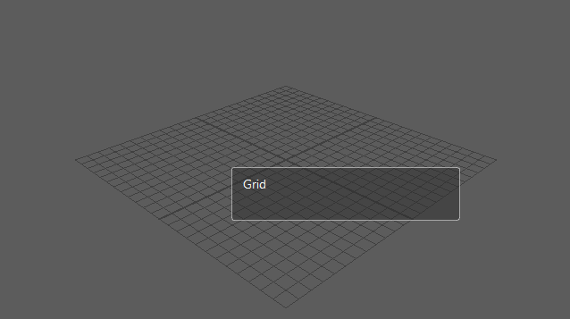
改行する場合は、Enter
キーを押してください。
テキストの決定は、Ctrl + Enter
キーで行います。
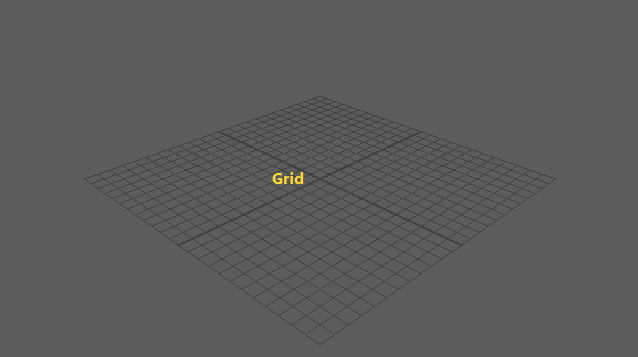
色の選択
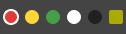
5つのプリセットカラー（赤、黄、緑、白、黒）と、カスタムカラーボタンから色を選択できます。
- プリセットカラー: クリックで選択
- カスタムカラー (BG): クリックで選択、右クリックでカラーピッカーを開いて色を変更
線幅の選択
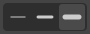
3つのプリセット（細、中、太）から線幅を選択できます。
アクションボタン
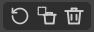
| ボタン | アイコン | 説明 |
|---|---|---|
| Undo | 最後の操作を元に戻す | |
| Delete | 選択中のアノテーションを削除 | |
| Clear All | すべてのアノテーションを削除 |
フッターボタン
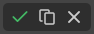
| ボタン | アイコン | 説明 |
|---|---|---|
| Save | アノテーション付き画像をPNGファイルとして保存 | |
| Copy | アノテーション付き画像をクリップボードにコピー | |
| Cancel | アノテーションエディターを閉じる（保存・コピーは行われません） |
キーボードショートカット
| キー | 説明 |
|---|---|
| Ctrl + Z | 直前の操作を元に戻す（作成・移動に対応） |
| Delete / Backspace | 選択中のアノテーションを削除 |
| Shift + ドラッグ | 線/矢印を45度単位にスナップ、矩形/楕円を正方形/正円に制約、番号を10px単位でスナップ |
| Space（長押し） | 押している間だけ一時的に選択ツールに切り替え（離すと元のツールに戻る） |
設定の保存
アノテーションエディターで選択した色と線幅は自動的に保存され、次回起動時に復元されます。
設定の保存
ウィンドウを閉じる際、以下の設定が自動的に保存されます。
- 選択中のモード
- 解像度（幅・高さ）
- 背景色
- 透明設定
- FPS
- Loop 設定
- MP4 品質設定
- Delay・Trim 設定
- カーソル・クリック・キー表示設定
- アノテーションエディターの色・線幅設定
次回起動時に、これらの設定が復元されます。
保存先について
- 初回保存時は、ツール専用のデータディレクトリがデフォルトの保存先として使用されます
- 一度ファイルを保存すると、同セッション内では最後に保存したディレクトリが記憶されます
注意事項
- GIF モードでは、最大 500 フレームまでキャプチャ可能です
- Rec モードの録画は、ビューポートの画面キャプチャを使用するため、他のウィンドウがビューポートを覆うとキャプチャに含まれる可能性があります
- 高解像度・高フレームレートでの録画は、メモリ使用量が増加します
- MP4 形式で保存するには、FFmpeg がシステムにインストールされている必要があります
- このツールを使用するには PIL (Pillow) ライブラリが必要です
オプション依存ライブラリ
以下のライブラリをインストールすると、追加機能や性能向上が得られます。いずれも必須ではなく、インストールされていない場合は自動的にフォールバック処理が行われます。
| ライブラリ | 用途 | フォールバック |
|---|---|---|
| mss | Rec モードの高速スクリーンキャプチャ（PIL ImageGrab の 2〜3 倍高速） | PIL ImageGrab を使用 |
| aggdraw | アノテーションのアンチエイリアス描画 | PIL ImageDraw を使用（アンチエイリアスなし） |
インストール方法
pip install mss aggdrawNote: aggdraw は事前ビルドされたホイールがない環境ではコンパイルが必要な場合があります。